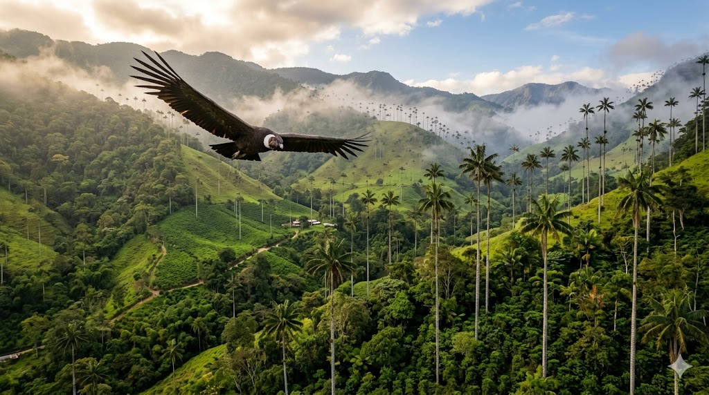

קונדור האנדים
Andean Condor • Colombia
א. אטימולוגיה (חקר השם המלא)
המקור הילידי: kuntur
שמו של הקונדור נטוע עמוק בשפות הילידיות של רכס האנדים הקולומביאני:
המילה המקורית "kuntur" מייצגת עבור עמי האנדים את הקשר הישיר לאלוהות. בתרבות המקומית, הקונדור אינו נחשב לנשר פשוט, אלא לשליח רוחני השולט במרחבים העליונים של השמיים. הספרדים שגילו את הציפור במאה ה-16 אימצו את השם כ-"Cóndor".
בקולומביה, השם מסמל לא רק את הציפור אלא את ה"חירות" (Libertad) המופיעה על סמל המדינה.
הסוג: Vultur
מקור: לטינית
נגזר מהפועל הלטיני Vulturus, שמשמעותו "לקרוא" או "לחטוף", אך מזוהה בעיקר עם "נשר" או "קורע". השם מתאר את דרך התזונה של העוף כמפרק פגרים.
המין: gryphus
מקור: יוונית עתיקה
נגזר מהמילה Gryps המציינת את ה"גריפון" המיתולוגי – יצור בעל גוף אריה וראש עיט. השם ניתן לו בשל מקורו המעוקל והמסיבי שמזכיר את היצור האגדי.
ניתוח זואולוגי: רבייה ותפוצה
יא כמות ביצים בכל הטלה
הקונדור מאופיין בשיעור רבייה נמוך מאוד. הנקבה מטילה ביצה אחת בלבד בכל מחזור רבייה המתרחש פעם בשנתיים. אם הביצה נאבדת, הנקבה עשויה להטיל ביצה חלופית באותה עונה.
יב תקופת הדגירה
משך הדגירה ארוך ביותר ונמשך בין 54 ל-60 ימים. שני ההורים משתתפים באופן פעיל בשמירה על הביצה, הנמצאת לרוב בקינים פשוטים על מדפי סלע גבוהים וחשופים לרוחות האנדים.
יג תפוצה גאוגרפית (קולומביה)
בקולומביה, הקונדור נפוץ בשלושת הרכסים של הרי האנדים (המערבי, המרכזי והמזרחי). אוכלוסיות חשובות נמצאות בסיירה נבדה דה סנטה מרתה ובפארקים לאומיים כמו פאראמו דה לס פאפאס. קולומביה מהווה את הקצה הצפוני של תחום תפוצתו העולמי.
יד מבנה חברתי: מונוגמיה
הקונדור הוא מין מונוגמי לטווח ארוך. בני הזוג יוצרים קשר הדוק הנמשך לאורך שנים, ולעיתים לכל החיים. הם נאמנים זה לזה ומשקיעים משאבים עצומים בגידול הגוזל היחיד שלהם עד להגעתו לעצמאות.
ב. שנות חיים
הקונדור הוא אחד העופות מאריכי החיים בטבע. הוא חי בממוצע בין 50 ל-70 שנים. בשבי תועדו פרטים שהגיעו לגיל 80 שנה. הישרדותו תלויה בשמירה על בתי גידול נקיים מהרעלות.
ג. גודל ומשקל
מוטת כנפיים: עד 3.3 מטרים (הגדולה ביותר בעופות יבשה).
משקל: זכרים עד 15 ק"ג, נקבות עד 11 ק"ג.
גובה עמידה: כ-1.2 מטרים.
ד. סיבת הבחירה כסמל לאומי (קולומביה)
הקונדור אומץ כסמל הלאומי של קולומביה ב-1834. הוא מופיע בראש סמל המדינה (Coat of Arms) כשהוא אוחז במקורו בזר עלי דפנה ופורש כנפיים רחבות. הוא נבחר משום שהוא מייצג את החירות וריבונות של האומה הקולומביאנית מעל הרי האנדים.
הקונדור מסמל את "הרוח החופשית" של העם הקולומביאני ואת יכולתו להתעלות מעל קשיים. בניגוד לאקוודור, בקולומביה מושם דגש רב על הקשר שבין הקונדור למושג ה"סדר והחירות" (Orden y Libertad), המוטו הלאומי של המדינה.
ה. הבדלים בין זכר ונקבה
דימורפיזם זוויגי בגודל: הזכר גדול וכבד מהנקבה. לזכרים יש כרבולת בשרנית כהה (Caruncle) על המצח ועיניים בצבע חום-צהבהב, בעוד שלנקבה אין כרבולת ועיניה אדומות. בנוסף, לזכרים יש לעיתים קפלי עור בולטים בצוואר המשתנים בצבעם לפי מצבם הרגשי.
ו. שם בנגלה של הציפור
אנדיאן קונדור (আন্দিয়ান কনডোর)
שם מתורגם פונטית מהאנגלית בשפה הבנגלית.
ז. שנת הגילוי (טקסונומיה)
1758
תואר על ידי קארולוס לינאוס ב-"Systema Naturae".
ט. תזונה
אוכל נבלות (Scavenger) מובהק. הוא ניזון מפגרים של יונקים גדולים כמו llamas, אלפקות, וצאן. הוא מסוגל לאכול כמות בשר עצומה בארוחה אחת ולאחר מכן לצום מספר שבועות.
ח. נסיבות הגילוי ההיסטוריות
האירופאים הראשונים שתיעדו את הקונדור בקולומביה היו הכובשים הספרדים במאה ה-16. הכרוניקן פדרו סייזה דה לאון תיאר את העופות העצומים הדואים מעל הרי האנדים ב-1553. בתקופה המושבתית, הקונדור נחשב למטרד, אך לאחר העצמאות הקולומביאנית הוא הפך לסמל של חירות ושחרור מהשלטון הזר.
י. מצב השימור
פגיע (Vulnerable - VU)
בקולומביה, הקונדור נמצא בסכנת הכחדה חמורה עקב הרעלות, ציד ואובדן שטחי מחייה. הממשלה הקולומביאנית מפעילה תוכנית שימור לאומית הכוללת שחרור פרטים שגדלו בשבי לטבע בהרי האנדים.